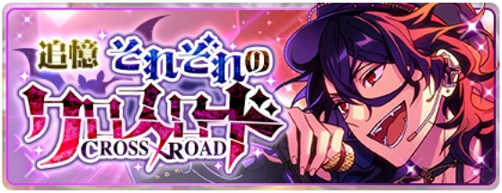
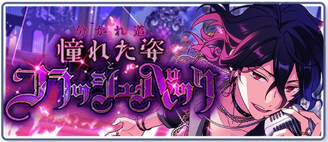
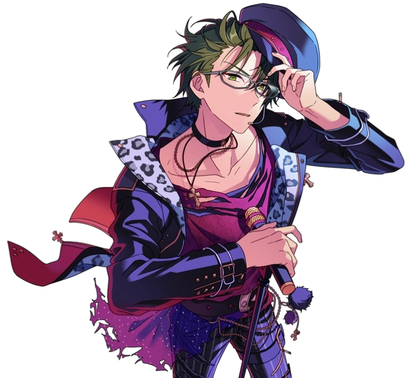
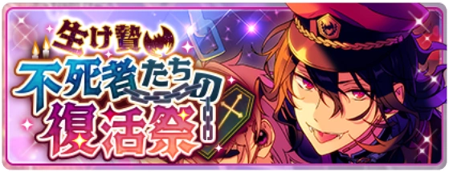
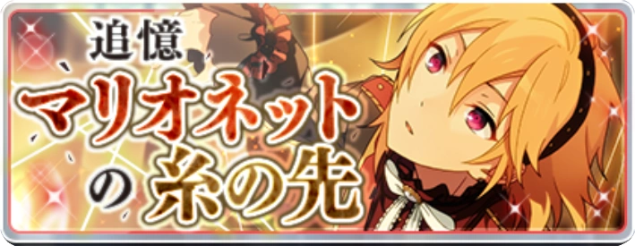
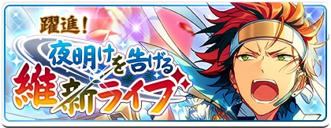
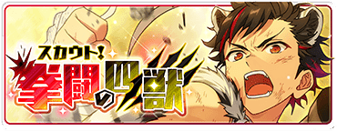
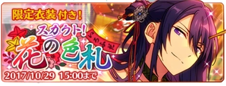

This brief timeline tracks the creation of AKATSUKI, Kuro and Souma's entrances into the unit, and its brief lifetime as a duo.



Keito formally meets Kuro in spring at the school gates; following a situation at the live house, Kuro approaches him on Chiaki's behalf to ask about Eichi's condition. Keito's expectations of Kuro are subverted; unlike most students, Kuro pays close attention to the speeches Keito gives during assemblies, and despite his appearance, he diligently wants to become an idol.
DEADMANZ was a temporary unit consisting of Rei, Keito and Koga before either AKATSUKI or UNDEAD was formed. According to Koga's "flashback" in Flashback, Kuro was considered a guest and not an official member.
Keito commissions Kuro to create the outfits for DEADMANZ Live, and in return for having him participate in his scheme, Keito officially recognizes Kuro's commissions as an official campus-job. Keito has Kuro join DEADMANZ as an ally; when Keito chooses rock stylings for the unit, he accounts for Koga's tastes and Rei's experience, but he also accounts for Kuro's powerful voice.
Prior to DEADMANZ Live, Keito and Souma were acquainted with each other, because of Keito's need to lecture Souma about carrying his swords. Souma is in the crowd during the DEADMANZ performance, watching Keito's performance in awe.

Following the events of DEADMANZ Live, Rei fled overseas without a word. In Resurrection Sunday, Keito tells Koga that DEADMANZ has more or less disbanded and encourages him to go and find a new group.
In Flashback, we receive the details that following Rei's disappearance, his followers began a rebellion, leeching off of Kaoru's livehouse. As Rei was overseas, Keito took charge of quelling the rebellion, assigning Koga and Adonis to work as DEADMANZ at the live house. Over time, Kaoru's association with the two of them led to people calling him a member of DEADMANZ.
When Rei returned from overseas, he took care of his followers and told Keito to process Kaoru into the unit. While Keito pulled away, the four members came together, and Koga ultimately changed the name from DEADMANZ to UNDEAD.


As units begin to rise and fight with each other, Keito incessantly calls Kuro, attempting to recruit him for a unit of their own. Kuro is initally reluctant at first, but gets worn down by the offers and joins. Although he doesn't get Keito's ideals or lofty goals, he chooses to stay with Keito because he recognizes his good heart. Thus began the brief era of AKATSUKI where Keito and Kuro were a duo.
According to Marionette, at this point in time in spring, Keito has already given the unit the name AKATSUKI. According to the flashback in Shinsengumi in summer, Kuro struggles remembering the name of the unit.

Throughout late spring and early summer, Keito creates the B1 Dragon King Competitions (a live where violence is permitted) for Kuro to participate and rack up wins for AKATSUKI; while AKATSUKI makes as many achievements as it can in an unassuming, obscure DreFes, they tarnish the track records for idols and units who may become a threat for the Student Council.
These Dragon King competitons happen at a near daily pace, but are also unprofitable. However, through them, the student council was able to take over Yumenosaki Academy. After their second-year, the student council rewrote the records to say that the Dragon King competition was a DreFes passed down through the karate club for generations from Yumenosaki's founding.

As AKATSUKI rose to prominence through the Dragon King Competitions, other Japanese-style idols changed course or disappeared. One Japanese-style idol flung a hanafuda card at Keito and Kuro as they performed on stage, suggesting that AKATSUKI as a duo were also performing in "typical" lives.
It's stated this was before Souma's time, so AKATSUKI had a Japanese-style theme prior to his entrance into the unit.
As AKATSUKI was in the midst of dominating Dragon King competitions, Souma demands to join the unit. Keito gives him difficult entrance exams to try and dissuade him, but ultimately, Souma wears Keito down with his abilities and enthusiasm and is permitted to join the unit. Keito expresses the wish to develop Souma's talent as an idol, as well as keep him close to discipline him easier.
Until Quarrel Festival, the primary function of AKATSUKI as a unit is to be a weapon for the student council; idol activity comes second, it is rare for them to gather for lessons, and their funds get funneled into the student council's budget.